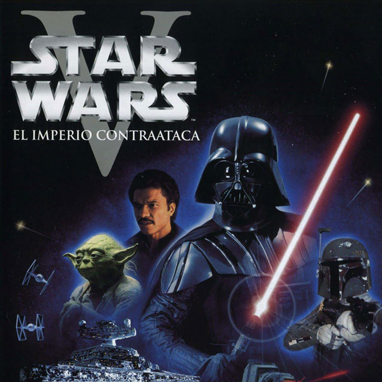
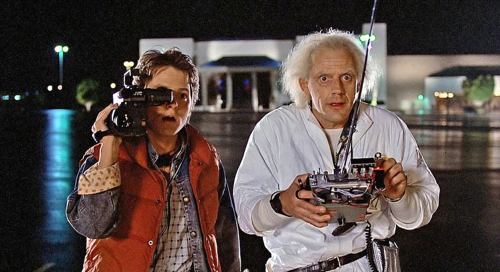
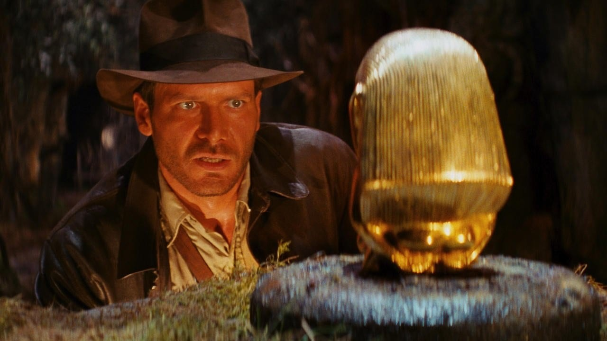
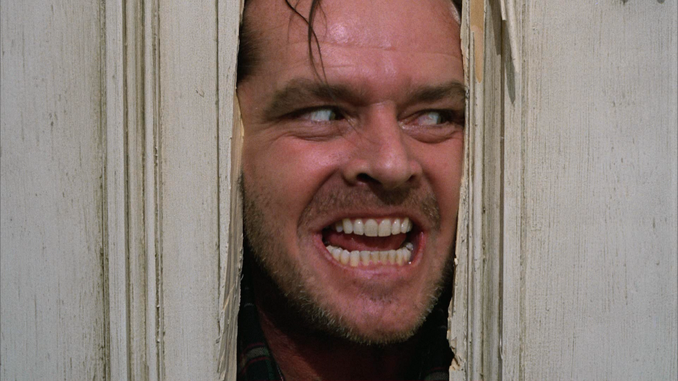
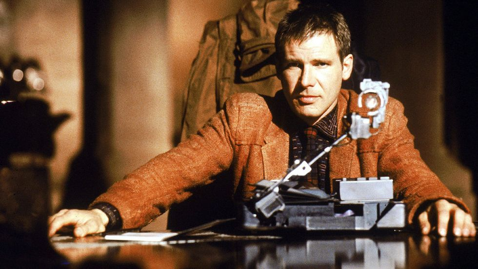
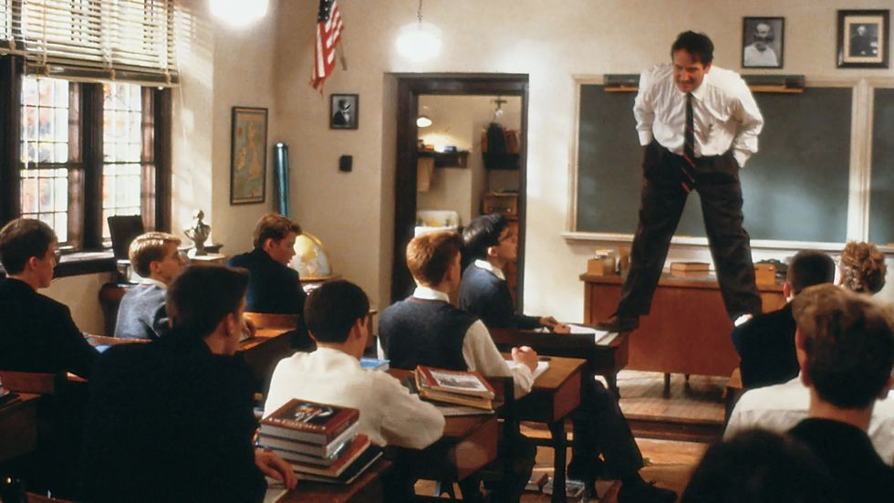

El imperio contraataca (Irvin Kershner, 1980)
La mejor película de los 80 es la considerada mejor película de Star Wars, la
segunda de la saga galáctica pero el Episodio VII (si te lías mira el orden correcto de las
películas de Star Wars). No puede reprochársele a George Lucas que abusara de una misma fórmula
del éxito, siempre cambiando de tono y subgénero en cada una de sus entregas de Star Wars. 'El
imperio contraaataca' fue (y sigue siendo) la más oscura de todas y la más mítica, con el
célebre "Luke, yo soy tu padre" de Darth Vader y un final embarrado para Han Solo. Era
blockbuster comercial de calidad como pocas veces se ha hecho. Lo mejorcito de los 80.

Volver al futuro (Robert Zemeckis, 1985)
Una máquina del tiempo en un DeLorean, un chaleco rojo, Michael J. Fox,
Christopher Lloyd y la historia de amor (y concepción) de los padres de Marty McFly. Pocos
clásicos han marcado nuestra idea de una época como Regreso al futuro, y eso que transcurre en
el pasado. Sigue siendo una de las mejores películas de viajes en el tiempo y un clásico del
género, una de las mejores películas de ciencia ficción que puedes ver

En busca del arca perdida (Steven Spielberg, 1981)
El comienzo de Indiana Jones. Aquí, como en Star Wars, las anécdotas y secretos de rodaje de 'En
busca del arca perdida' se mezclan con la leyenda. Las aventuras en países exóticos, la narración
clásica de Steven Spielberg, el sentido de la acción como una montaña rusa y, sobre todo, Harrison
Ford con sombrero y latigo crearon el arqueólogo más famoso de todos los tiempos. Como que hasta
entonces a ningún niño se le habría ocurrido elegir una carrera que exige saber latín y ahora son
legión.

El resplandor (Stanley Kubrick, 1980)
Cientos de miles de usuarios de IMdB consideran a 'El resplandor' como la mejor película de Stanley
Kurbrick, por más que le pese a Stephen King, al que no le gustó un pelo que los guionistas se
tomaran tantas libertades. Es un viaje a la locura que puede provooar el aislamiento y también a la
obsesión que puede provocar un título como este en sus espectadores, que llevan décadas produciendo
teorías y análisis sobre la película. Curiosamente, de lo que no se trata es de la mejor adaptación
de Stephen King, puesto que desempeña 'Cadena perpetua', la película favorita en la plataforma.
Crítica de 'El resplandor'

Blade Runner (Ridley Scott, 1982)
Hasta no hace mucho al imaginar las ciudades del futuro el cine seguía construyendo sus imágenes
con el recuerdo de 'Blade Runner' en 'Dark City', 'Matrix' y tantas tantas otras. La película, una
de las mejores de Ridley Scott, fue tan influyente como lo fuera en su momento 'Metrópolis' y ha
marcado la mezcla de especulación filosófica y ciencia ficción de directores como Denis Villeneuve o
Christopher Nolan. Le debemos tanto a 'Blade Runner' que no nos importa ni la disputa por sus
múltiples montajes ni si es o no una película futurista que se ha quedado en el pasado.

El club de los poetas muertos (Peter Weir, 1989)
El profesor con el que todos soñábamos y que nunca existió, el personaje más emblemático de Robin
Williams, la película con la que una generación descubrió qué era el 'carpe diem', 'El club de los
poetas muertos' es la más tierna, ingenua y romántica película de adolescentes de los 80. De esas
que hacen a los chavales mejores personas.